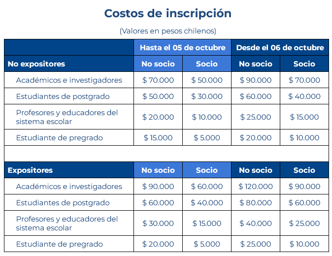

Congreso
Sociedad Chilena de Educación Matemática
Pluralidad: Corazón de la educación científica para futuros más justos
Sobre el Congreso
El Sexto Congreso de la Sociedad Chilena de Educación Científica se realizará los días 5, 6 y 7 de noviembre de 2025, en La Universidad de Tarapacá, Arica, Región de Arica y Parinacota, Chile. Bajo el lema de Pluralidad: Corazón de la educación científica para futuros más justos, el objetivo general del sexto Congreso de la Sociedad Chilena de Educación Científica es: Celebrar y visibilizar la diversidad de voces, saberes y prácticas en la educación científica, integrando experiencias de enseñanza, aprendizaje, investigación e innovación desde las ciencias naturales y campos afines. Buscamos entrelazar perspectivas locales, regionales y globales, reconociendo la riqueza de los contextos latinoamericanos, así como sus diálogos con el mundo. Este espacio aspira a ser un punto de encuentro donde diferentes agendas, intereses y formas de conocer confluyen y se enriquezcan mutuamente, reconociendo que cada aproximación y visión contribuye de manera única y valiosa al florecimiento de la educación científica y sus didácticas. A través de nuestro congreso, buscamos imaginar y construir colectivamente futuros más equitativos y sostenibles desde la educación en ciencias.Circulares
Poner las tres circulares
Inscripción
Para inscribirte al congreso, completa el siguiente formulario:
Formulario Contacto
Correo: contacto@congresomatematica.org
Teléfono: +56 9 1234 5678